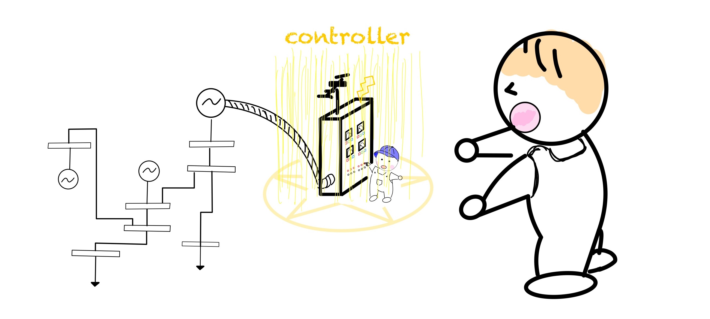

制御器の付加¶
前の章では電力ネットワークを定義し、その情報を変数netに格納する所までできたと思います。
本章では、その変数netをクラス内でメソッドとして定義されている関数を用いて、シュミレーションしていきます。まだ変数netを定義していない場合は、電力系統モデル作成の解説ページを参考にして下さい。
本章を始めるにあたって用意するもの：電力ネットワークの情報を格納した変数net
本GUILDAは 「システム制御分野の学生や研究者を対象とした数値シミュレーション環境を提供すること」 を目的としていますのでメインユーザーは制御器設計を目的とした方々を想定しています。そのため、本ページでは、
- 自身の考える制御器モデルをcontrollerクラスとして実装する方法の解説。
- 定義したcontrollerクラスをpower_networkクラスに付加する。
という順で解説を進めていきます。
【新しい制御器モデルを実装する】¶
新たな制御器モデルをGUILDA上に実装する方法を解説します。その際に、実装すべきメソッドやプロパティをまとめています。既にGUILDA上で実装されている制御器モデルを利用する場合は、次の節に進んでいただいて問題ないです。↓clickして解説ページへ
【２種類のcontrollerクラス】¶
GUILDAでは制御機モデルをローカルコントローラとグローバルコントローラの２つに分類しています。
- local controller：各機器にローカルに付加する制御器。
例)レトロフィットコントローラ - global controller：複数の機器を対象とした制御器。
例)AGC
この２つのコントローラはどちらもcontrollerクラスのオブジェクトとして定義されます。違いは、localコントローラは観測値としてglobalコントローラからの指令値を取得することが出来るという点です。コード上ではcontrollerクラスではget_dx_uというメソッドを定義しますが、以下のように呼び出され方が異なります。
- localコントローラの場合は
matlab [dx, u] = get_dx_u(obj, t, x, X, V, I, u_global) - globalコントローラの場合は
matlab [dx, u] = get_dx_u(obj, t, x, X, V, I, [])
【controllerクラスを電力系統に付加する】¶
付加するコントローラがlocalコントローラかglobalコントローラかによって、呼び出す関数が異なりますのでご注意ください。
まず、初めにローカルコントローラをconという名前のインスタンス変数に定義したとします。(※controllerクラスの定義の仕方は、各関数の実装方法によりますので、使いたいコントローラクラスのdocを参照してください。)このコントローラを系統に付加する方法は、
matlab
net.add_controller_local(con);
となり、一方でグローバルコントローラをconというインスタンス変数として定義した場合、このコントローラを系統に付加する方法は、
matlab
net.add_controller_global(con);
となります。すると、power_networkクラスのa_controller_~のプロパティにcell配列が生成され付加した順番にコントローラクラスの変数が並びます。
以上でコントローラを電力系統に付加することができました。
また、これらのコントローラを取り除く際は以下の様にできます。
matlab
% a_controller_localのcell配列の内,1番目のコントローラを取り除きたい場合
net.remove_controller_local(1);
matlab
% a_controller_globalのcell配列の内,3番目のコントローラを取り除きたい場合
net.remove_controller_global(3);
【実行例】¶
最後に系統に制御機を付加する際の一連の実行例を紹介したいと思います。
今回はcontroller_broadcast_PI_AGCというコントローラを例に行います。このコントローラはAGCのモデルを実装した制御器モデルですので、発電機の周波数偏差を観測し偏差を0にするよう各発電機に入力を与える制御器になります。このcontrollerクラスの使い方は、
matlab
con = controller_broadcast_PI_AGC_normal(net, y_idx, u_idx, Kp, Ki);
となります。それぞれの引数は以下のようになります。
- 入力引数
net
コントローラを追加する予定のネットワークのインスタンス（ power_network クラス） - 入力引数
y_idx
出力を観測するバスの番号． - 入力引数
u_idx
入力を印加するバスの番号． - 入力引数
KpKi
コントローラのPIゲイン．
では、IEEE68bus電力系統モデルにこのコントローラを孵化してみましょう。IEEE68busモデルは母線1から母線16まで発電機が付加されています。今回は16機全ての発電機から周波数偏差を観測し16機全てに入力を与えるようなコントローラを実装してみます。
net = network_IEEE68bus
IEEE68busを実装したpower_networkクラスのインスタンスにコントローラを追加するy_idx = 1:16
母線1~16に接続された同期発電機の周波数偏差を観測するu_idx = 1:16
母線1~16に接続された同期発電機に入力を印加するKp = -10Ki = -500
コントローラのPIゲイン．
matlab
net = network_IEEE68bus;
con = controller_broadcast_PI_AGC_normal(net, 1:16, 1:16, -10, -500);
net.add_controller_global(con);
このようにして、電力系統にコントローラを付加することができました。この電力系統モデルを用いて、次の章(【作成した電力系統モデルの解析を行う】)では、シミュレーションを実行して時間応答を見たり、線形化システムを導出することを行います。